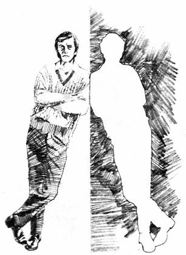

The Rich Man and Lazarus: An Intermediate State? Luke 16:19-31
by E.W. Bullinger, D. D. (Born 1837---Died 1913) Minister of the Church of England
He was born in Canterbury , Kent , England, the youngest of five children of William and Mary (Bent) Bullinger. His family traced their ancestry back to Heinrich Bullinger , the Swiss Reformer.
His formal theological training was at King's College London from 1860---1861, earning an Associate's degree. After graduation, on October 15, 1861, he married Emma Dobson, thirteen years his senior. He later received a Doctor of Divinity degree in 1881 from Archibald Campbell Tait , Archbishop of Canterbury who cited Bullinger's "eminent service in the Church in the department of Biblical criticism."
Bullinger's career in the Church of England spanned 1861 until 1888. He began as associate curate in the parish of St. Mary Magdalene, Bermondsey in 1861, and was ordained as a priest in the Church of England in 1862. He served as parish curate in Tittleshall from 1863---1866; Notting Hill from 1866---1869; Leytonstone , 1869---1870; then Walthamstow until he became vicar of the newly established parish of St. Stephen's in 1874. He resigned his vicarage in 1888.
In the spring of 1867, Bullinger became clerical secretary of the Trinitarian Bible Society , a position he would hold till his death in 1913. Bullinger was editor of a monthly journal Things to Come subtitled A Journal of Biblical Literature, with Special Reference to Prophetic Truth. The Official Organ of Prophetic Conferences for over 20 years (1894---1915) and contributed many articles.
____________________________________________________________
In dealing with this Scripture, and the subject of the so-called "intermediate state", it is important that we should confine ourselves to the Word of God , and not go to Tradition. Yet, when nine out of ten believe what they have learned from Tradition, we have a thankless task, so far as pleasing man is concerned. We might give our own ideas as the the employment's, etc., of the "departed,"and man would deal leniently with us. But let us only put God's Revelation against man's imagination, and then we shall be made to feel his wrath, and experience his opposition.
Claiming, however, to have as great a love and jealousy for the Word of God as any of our brethren; and as sincere a desire to find out what God says, and what God means: we claim also the sympathy of all our fellow members of the Body of Christ. There are several matters to be considered before we can reach the Scripture concerning the rich man and Lazarus; or arrive at a satisfactory conclusion as to the State after death. It will be well for us to remember that all such expressions as "Intermediate State,""Church Triumphant,"and others similar to them are unknown to Scripture. They have been inherited by us from Tradition, and have been accepted without thought or examination.
Putting aside, therefore, all that we have thus been taught, let us see what God actually does reveal to us in Scripture concerning man, in life, and in death; and concerning the state and condition of the dead.
Psalm 146:4 declared of man,
"His breath goeth forth,
He returneth to his earth;
In that very day his thoughts perish."
God is here speaking of "Man"; not of some part of man, but of "princes," and "man" or any "son of man" (v. 3), i.e. Any and every human being begotten or born of human parents.
There is not a word about "disembodied man."No such expression is to be found in the Scriptures! The phrase is man's own invention in order to make this and other scriptures agree with his tradition. This Scripture speaks of "man" as man. "His breath"; "he returneth"; "his thoughts." It is an unwarrantable liberty to put "body"when the Holy Spirit has put "man." The passage says nothing about the "body." It is whatever has done this thinking. The "body" does not think. The "body" apart from the spirit has no "thoughts." Whatever has had the "thoughts" has them no more; and this is "man." If this were the only statement in Scripture on the subject it would be sufficient. But there are many others.
There is Ecc. 9:5, which declares that "The dead know not anything." This also is so clear that there could be no second meaning. "The dead" are the dead; they are those who have ceased to live; and, if the dead do or can know anything, then words are useless for the purpose of revelation. The word "dead" here is used in the immediate context as the opposite of "the living," e.g.:
"The living know that they shall die, But the dead know not anything"
It does not say dead bodies know not anything, but "the dead," i.e. dead people, who are set in contrast with "the living." As one of these "living" David says, by the Holy Spirit (Psalm 146:2)
"While I live will I praise the Lord:
I will sing praises unto my God while I have any being."
There would be no praising after he ceased to "live." Nor would there be any singing of praises after he had cease to "have any being." Why? Because "princes" and "the son of man" are helpless (Psalm 146:3,4). They return to their earth; and when they die, their "thoughts perish": and they "know not anything."
This is what God says about death. He explains it to us Himself. We need not therefore ask any man what it is. And if we did, his answer would be valueless, inasmuch as it is absolutely impossible for him to know anything of death, i.e. the death-state, as we have no noun in English to express the act of dying (as German has in the word "sterbend"). This is unfortunate, and has been the cause of much error and confusion.
We find the answer is just as clear and decisive in Psalm 104:29,30:
"Thou takest away their breath (Heb. spirit), they die,
And return to their dust:
Thou sendest forth thy spirit, they are created:
And thou renewest the face of the earth."
With this agrees Ecc. 12:7, in which we have a categorical statement as to what takes place at death: "Then shall the dust RE-turn to the earth as it was:
And the spirit shall RE-turn unto God who gave it". The "dust" was, and will again be "dust": but nothing is said in Scripture as to the spirit apart from the body, either before their union, which made man "a living soul," or after that union is broken, when man becomes what Scripture calls "a dead soul."
Where Scripture is silent, we may well be silent too: and, therefore, as to the spirit and its possibilities between dying and resurrection we have not said, and do not say, anything. Scripture says it will "return to GOD." We do not go beyond this; nor dare we contradict it by saying, with Tradition, that it goes to Purgatory or to Paradise; or with Spiritualism , that it goes elsewhere.
The prayer in I Thess. 5:23 is that these three (body, soul, and spirit) may be found and "preserved ENTIRE...at the coming of our Lord Jesus Christ" (R.V.): i.e. preserved alive as a "living soul" till (or "at") that coming; and not to die and be separated before it. Hence the importance of Resurrection as the great doctrine peculiar to Christianity; and known only by revelation. All man's religions end at death, and his only hope is "after death." Christianity goes beyond this, and gives a hope after the grave. Scripture shuts us up to the blessed hope of being reunited in resurrection. This is why the death of believers is so often called "sleep"; and dying is called "falling asleep"; because of the assured hope of awaking in resurrection. It is not called "the sleep of the body" as many express it; or "the sleep of the soul." Scripture knows nothing of either expression. Its language is, "David fell on sleep" (Acts 13:36), not David's body or David's soul. "Stephen...fell asleep" (Acts 7:60). "Lazarus sleepeth" (John 11:11), which is explained, when the Lord afterward speaks "plainly," as meaning "Lazarus is dead"(v. 14).
Now, when the Holy Spirit uses one thing to describe or explain another, He does not choose the opposite word or expression. If He speaks of night, He does not use the word light. If He speaks of daylight, He does not use the word night. He does not put "sweet for bitter, and bitter for sweet" (Isa. 5:20). He uses adultery to illustrate Idolatry; He does not use virtue. And so, if He uses the word "sleep" of death, it is because sleep illustrates to us what the condition of death is like. If Tradition be the truth, He ought to have used the word awake, or wakefulness. But the Lord first uses a Figure, and says "Lazarus sleepeth"; and afterwards, when he speaks "plainly" He says "Lazarus is dead." Why? Because sleep expresses and describes the condition of the "unclothed" state. In normal sleep, there is no consciousness. For the Lord, therefore, to have used this word "sleep"to represent the very opposite condition of conscious wakefulness, would have been indeed to mislead us. But all His words are perfect; and are used for the purpose of teaching us, and not for leading us astray.
Traditionalists, however, who say that death means life, do not hesitate to say also that to "fall asleep" means to wake up! A friend vouches for a case, personally known to him, of one who (though a firm believer in tradition) was, through a fall, utterly unconscious for two weeks. Had he died during that period, Traditionalists would, we presume, say that the man woke up and returned to consciousness when he died! But, if this be so, what does it mean when it says,
"I will behold thy face in righteousness:
I shall be satisfied, when I Awake with thy likeness"?
If death is waking up, what is the waking in this verse (Psalm 17:15)? Surely it is resurrection, which is the very opposite of falling asleep in death. Indeed, this is why sleep is used of the Lord's people. To them it is like going to sleep; for when they are raised from the dead they will surely wake again according to the promise of the Lord; and they shall awake in His own likeness.
And if we ask what life is, the answer from God is given in Gen. 2:7:
"The Lord God formed man of the dust of the ground,
And breathed into his nostrils the breath of life,
And man became a living soul."
So that the body apart from the spirit cannot be the man; and the spirit apart from the body is not the man; but it is the union of the two that makes "a living soul." When two separate things, having different names, are united, they often receive and are known by a third name, different from both. Not that they are three separate beings, but two united in one, which makes a third tiling, and receives another or third name. For example, there is the barrel, and there is the stock; but, together, they form and are called a Rifle. Neither is the Rifle separately. Oxygen and Hydrogen are two separate and distinct elements; but when they are united, we call them Water. So also we have the case, and the works; but together they form what we call a Watch; neither is the Watch separately.
The Hebrew is Nephesh Chaiyah , soul of life, or living soul. What it really means can be known only by observing how the Holy Spirit Himself uses it. In this very chapter (Gen. 2:19) it is used of the whole animate creation generally; and is rendered "living creature."
Four times it is used in the previous chapter (Gen. 1.):
In verse 20 it is used of "fishes,"and is translated "moving creature that hath life."
In verse 21 it is used of the great sea monsters, and is translated "living creature."
In verse 24 it is used of "cattle and beasts of the earth,"and is again rendered "living creature."
In verse 30 it is used of "every beast of the earth, and every fowl of the air, and every living thing that creepeth upon the earth wherein there is (i.e. "to"which there is) life . Margin "Heb. living soul."
Four times in chapter 9 it is also rendered "living creature,"and is used of "all flesh." See verses 10, 12, 15, 16.
Twice in Leviticus 11 it is used:
In verse 10 of all fishes, and is rendered "living thing."
In verse 46 of all beasts, birds, and fishes, and is translated "living creature."
Only once (Gen. 2:7) when it is used of man, has it been translated "living soul"- as though it there meant something quite different altogether.
The Translators could accurately have used one rendering for all these passages, and thus enabled Bible students to learn what God teaches on this important subject.
This then is God's answer to our question, What is life? The teaching of Scripture is (as we have seen) that man consists of two parts: body and spirit; and that the union of these two makes a third thing, which is called "soul" or "living soul." Hence the word "soul" is used of the whole personality; the living 'organism' e.g. Gen. 12:5, "Abram took Sarai his wife...and the souls (i.e. the persons) whom they had gotten in Haran." Gen 36:6, "And Esau took his wives...and all the persons (marg. Heb. souls) of his house." So 46:15, and 26, "All the souls (i.e. persons) which came with Jacob into Egypt." As persons, souls have "blood" Jer. 2:34, "In thy skirts is found the blood of the souls of the poor innocents." The Hebrew word nephesh (soul) is actually translated "person" in Gen. 14:21; 36:6. Ex. 16:16. Lev. 27:2. Num. 5:6; 31:19; 35:11, 15, 30 (twice). Deut. 10:22; 27:25. Josh. 20:3, 9. I Sam. 22:22. 2 Sam. 14:14. Prov. 28:17. Jer. 43:6; 52:29, 30. Ezek. 16:5; 17:17; 27:13; 33:6.
Hence, the Lord Jesus says, "Fear not them which kill the body, but are not able to kill the soul (i.e. the 'personality') but rather fear him which is able to destroy both soul and body (i.e. the whole personality) in hell" (Greek, Gehenna , not Hades ) (Matt. 10:28).
Hence, souls (as persons) are said to be destroyed: Lev. 5:1, 2, 4, 15, 17; 6:2; 17:11, 12. Num. 15:30. See also Joshua 10:20, 30, 32, 35, 37, 39.
The soul, being the person, is said to be bought and sold. See Lev. 22:11, and Rev. 18:13, where the word "soul"is used of slaves.
Hence, also, when the body returns to dust and the spirit returns to God, the person is called a "dead soul," i.e. a dead person. That is why it says in Ezek. 18:4, "The soul that sinneth, it shall die"; and Psalm 78:50, "He spared not their soul from death." What "the breath of life" is in Gen. 2:7, is explained for us in Gen. 7:22, where we read that every thing died, "all in whose nostrils was the breath of life." Margin, "Heb. the breath of the spirit of life," which is a still stronger expression, and is used of the whole animate creation that died in the Flood.
But such are the exigencies of Traditionalists, that in thirteen passages where the Hebrew word " nephesh " (soul) refers to a dead soul , such reference is hidden from the English reader by the Translators. Nephesh is actually rendered "body" in Lev. 21:11. Num. 6:6; 19:11, 13. Haggai 2:13. "Dead Body" in Num. 9:6, 7, 10. And "The Dead" in Lev. 19:28; 21:1; 22:4. Num. 5:2; 6:11. In none of these passages is there a word in the margin of either the A.V. or R.V. to indicate that the translators are thus rendering the Hebrew word nephesh (soul).
Again, Sheol is the Hebrew word used in the Old Testament for the grave , or death-state, and Hades is the corresponding Greek word for it in the New Testament. It is Hades in Luke 16:23; and not Gehenna , which means hell.
The Scriptures are also positive and numerous which declare the " Hades ," where the Rich Man is said to be "buried" is always represented as a place of silence. "There is no work, nor device, nor knowledge in the grave (Heb. Sheol ) whither thou goest" (Ecc. 9:10). But the rich man, here, was making devices, based on his knowledge. Of those who are there it is written, "Their love, and their hatred, and their envy is now perished; neither have they any more a portion for ever in anything that is done under the sun" (Ecc. 9:6). But the rich man is represented as having "love"for his brethren; and as having a "portion" in what is being done on earth.
Psalm 6:5 declares that
"In death there is no remembrance of Thee,
In the grave (Heb. Sheol ) who shall give Thee thanks?"Psalm 31:17, "Let them be silent in the grave" (Heb. Sheol ).
Psalm 115:17, "The dead praise not the Lord;
Neither any that go down into silence"
The Scriptures everywhere speak of the dead as destitute of knowledge or speech;
and as knowing nothing till resurrection. If these Scriptures are to be believed (as they most surely are), then it is clear that the teaching of Tradition is not true, which says that death is not death, but only life in some other form.Psalm 30:9,
"What profit is there in my blood, when I go down to the pit?
Shall the dust praise Thee? shall it declare Thy truth?"Psalm 88:11,
"Shall Thy lovingkindness be declared in the grave?
or Thy faithfulness in destruction?"Isaiah 38:18,
"For the grave cannot praise Thee, death can not celebrate Thee:
They that go down into the pit cannot hope for Thy truth."Isaiah 38:19,
"The living, the living, he shall praise Thee, as I do this day:
The father to the children shall make known Thy truth."
Hades means the ' grave ' (Heb. Sheol ): not in Heathen mythology, but in the Word of God. It was in Hades the Lord Jesus was put: for "He was buried." As to His Spirit, He said, "Father, into thy hands I commend my Spirit" (Luke 23:46). And as to His body, it was "laid in a sepulchre." Of this burial He says (Psalm 16:9): "Thou wilt not leave my soul (i.e. me. Myself) in Sheol (or Hades ), Neither wilt Thou suffer Thy holy one to see corruption."
These two lines are strictly parallel; and the second expands and explains the first. Hence, Sheol (Greek, Hades ) is the place where "corruption" is seen. And resurrection is the only way of exit from it. This is made perfectly clear by the Divine commentary on the passage in the New Testament. We read in Acts 2:31: "He (David) seeing this before spake of the resurrection of Christ, that his soul (i.e. he) was not left in Hades; neither his flesh did see corruption." To make it still more clear, it is immediately added, and expressly stated, that "David is not yet ascended into the heavens" (v. 34), and therefore had not been raised from the dead. Note, it does not say David's body, but David. This is another proof that resurrection is the only way of entrance into heaven.
But this passage (Psalm 16:10) is again referred to in Acts 13:34-37, and here we have the same important lesson restated: "And as concerning that he raised him up from the dead, now no more to return to corruption, he saith...thou shalt not suffer thine Holy One to see corruption...For David fell on sleep, and was laid unto his fathers, and saw corruption. But he whom God raised again saw no corruption." He saw it not, because He was raised from the dead, and thus brought out of the Sepulchre, where He had been "buried." This is the teaching of the Word of God. It knows nothing whatever of a "descent into hell" as separate, and distinct, from His burial. That is tradition pure and simple. Not one of the Ancient Creeds of the Church knew anything of it. Up to the seventh century they all said "And was buried"and nothing more. But the Creed used in the Church of Aquileia (A.D. 400), instead of saying "buried"had the words "he descended into hell," but only as an equivalent for "he was buried." This was of course quite correct.
These are the words of Bishop Pearson (Exposition of the Creed. Fourth Ed. 1857, pp. 402-3)
"I observe that in the Aquileian Creed, where this article was first expressed, there was no mention of Christ's burial; but the words of their Confession ran thus, crucified under Pontius Pilate, he descended in inferna . From whence there is no question but the observation of Ruffinus (fl. 397), who first expounded it, was most true, that though the Roman and Oriental Creeds had not these words, yet they had the sense of them in the word buried. It appears, therefore, that the first intention of putting these words in the Creed was only to express the burial of our Saviour, or the descent of his body into the grave. In a note he adds that "the same may be observed in the Athanasian Creed, which has the descent, but not the Sepulchre (i.e. the burial)...Nor is this observable only in these two, but also in the Creed made at Sirmium, and produced at Ariminim" (A.D. 359).
By the incorporation of the words "he descended into hell" in the "Apostles' Creed" and the retention of the word "buried," Tradition obtained an additional "article of faith" quite distinct from the fact of the Lord's burial. This is not a matter of opinion, but a matter of history. Not only are these historical facts vouched for by Bishop Pearson, but by Archbishop Ussher, and in more recent times by the late Bishop Harold-Browne in his standard work on the Thirty-Nine Articles.
Those who have been brought up on "The Apostles' Creed" naturally read this spurious additional article "he descended into hell," into Luke 23:43 and I Peter 3:19, and of course find it difficult to believe that those passages have nothing whatever to do with that "descent." They are thus led into the serious error of substituting man's tradition for God's revelation. This tradition about "the descent into hell" led directly to a misunderstanding of I Peter 3:17-22. But note:
No other explanation of this passage takes in the argument of the context; or complies with the strict requirements of the original text. Thus the support for the tradition about Christ's "descent into hell" as distinct from His being buried, vanishes from the Scriptures. Eph. 4:9 also speaks of the Lord's descent "into the lower parts of the earth" before His ascension "on high." But this word "of" here is what is called the genitive of apposition, by which "of the earth" explains what is meant by "the lower parts" and should be rendered "the lower parts," that is to say "the earth." For example: "the temple of his body" means "the temple," that is to say "his body" (John 2:21). "A sign of circumcision"means " a sign," that is to say "circumcision" (Romans 4:11). "The first fruits of the Spirit" means "the first fruits," that is to say "the Spirit" (Romans 8:23). "The earnest of the Spirit" means "the earnest," that is to say "the Spirit" (2 Cor. 5:5). "The bond of peace" means "the bond," which is "peace" (Eph. 4:3). "The breastplate of righteousness" means "the breastplate," which is "righteousness" (Eph. 4:14). So here it should be rendered "He descended into the lower parts (that is to say) the earth." If it means more than this it is not true, for He was "laid in a Sepluchre" and not in a grave in, or below, the Earth: His spirit being commended into the Father's hands. This descension stands in contrast with His ascension --- "He that descended is the same also that ascended" (v. 10). It refers to His descent from heaven in Incarnation, and not to any descent as distinct from that, or from His burial.
But Tradition is only handing down of the Old Serpent's lie which deceived our first parents. God said, "Thou shalt SURELY die" (Gen. 2:17). Satan said "Thou shalt NOT surely die" (Gen. 3:4). And all Traditionalists and Spiritists agree with Satan in saying, "There is no such thing as death; it is only life in some other form."
In Phil. 2:27 we read that Epaphroditus "was sick unto death; but God had mercy on him." So that it was mercy to preserve Epaphroditus from death. This could hardly be called "mercy" if death were the "gate of glory," according to popular tradition.God speaks of death as an "enemy"(I Cor. 15:26)
Man speaks of it as a friend.God speaks of it as a terminus.
Man speaks of it as a gate.God speaks of it as a calamity.
Man speaks of it as a blessing.God speaks of it as a fear and a terror.
Man speaks of it as a hope.God speaks of delivering from it as shewing "mercy."
Man, strange to say, says the same! and loses no opportunity of seeking such deliverance by using every means in his power.
In II Cor. 1:10, 11, it was deliverance of no ordinary kind when Paul himself also was "delivered from so great a death" which called for corresponding greatness of thanksgiving for God's answer to their prayers on his behalf. Moreover, he trusted that God would still deliver him. It is clear from II Cor. 5:4 that Paul did not wish for death: for he distinctly says "not for that we would be unclothed, but clothed upon (i.e. in resurrection and "change") that mortality might be swallowed up of life"; not of death. This is what he was so "earnestly desiring" (v. 2). True, in Phil. 1:21 some think Paul spoke of death as "gain,"but we may ask, "Whose gain?" The answer is clear, for the whole context from verses 12-24 shows that Christ and His cause are the subjects to which he is referring; not himself. Paul's imprisonment had turned out to be for "the furtherance of the Gospel" (v. 12). His death might further it still more, and thus prove a "gain" for it. Verse 21 begins with "for" and is given in explanation of verse 20.
Hezekiah also had reason to praise God for delivering him from "the king of terrors." It was "mercy" shown to Epaphroditus; it was "a gift" to Paul; it was "love" to Hezekiah. He says (Isa. 38:17-19):
"Thou hast in love to my soul (i.e. to me) delivered it (i.e. me) from the pit (Heb. Bor , a rock-hewn sepulchre) of corruption. For thou has cast all my sins behind thy back. For the grave (Heb. Sheol ) cannot praise thee, death cannot celebrate thee: They that go down into the pit cannot hope for thy truth. The living, the living, he shall praise thee, as I do this day."
On the other hand the death of Moses was permitted, for it was his punishment, therefore, there was no deliverance for him though he sought it (Deut. 1:37; 3:23, 27; 4:21, 22; 31:2). Surely it could have been no punishment if death is not death; but, as is universally held, the gate of paradise! In Phil. 1:21, death would have been Paul's "gain,"for Paul was not on Pisgah, but in prison; and it would have been a happy issue out of his then afflictions.
So effectually has Satan's lie succeeded, and accomplished its purpose that, though the Lord Jesus said "I will come again and receive you unto myself," Christendom says, with one voice, "No! Lord. Thou needest not to come for me: I will die and come to Thee." Thus the blessed hope of resurrection and the coming of the Lord have been well nigh blotted out from the belief of the Churches; and the promise of the Lord been made of none effect by the ravages of Tradition. Men may write their books, and a Spiritist may entitle on "There is no death," etc. They may sing words and expressions which are foreign to the Scriptures, about "the Church triumphant." They may speak of having "passed on"; and about the "home-going"; and "the great beyond"; and the "border-land"; and "beyond the veil"; but against all this we set a special revelation from God, introduced by the prophetic formula, "the Word of the Lord."
"This we say unto you BY THE WORD OF THE LORD that we which are alive and remain shall not precede (R.V.) them which are asleep" (I Thess. 4:15). To agree with Tradition this ought to have been written, "shall not precede them which are already with the Lord." But this would have made nonsense; and there is nothing of that in the Word of God. There are many things in Scripture difficult; and hard to be understood; there are many Figures of Speech also; but there are no self-contradictory statements such as that would have been.Moreover, we ought to note that this special Divine revelation was given for the express purpose that we might not be ignorant on this subject, as the heathen and Traditionalists were. This revelation of God's truth as to the state of the dead is introduced by the noteworthy words in verse 13: "I would not have you ignorant, brethren, concerning them that are asleep." Unless, therefore, we know what the Lord has revealed, we must all alike remain "ignorant." What is revealed here "by the Word of the Lord", is
Those who do not know the truths here given by special Divine revelation have invented other ways of getting there. They say the "death is the gate of glory." God says that resurrection and ascension is the gate. It is the tradition that those who have fallen asleep are already in heaven that has given rise to the idea of "the Church Triumphant." But no such expression can be found in Scripture. Eph. 3:15 is supposed to teach or support it, when it speaks of "The whole family in heaven and earth." But it is by no means necessary to translate the words in this way. The R.V. and the American R.V. render them "every family in heaven and earth" so does the A.V. also in Eph. 1:21, where we have the same subject, viz. the giving of names (as onomazo , in both places, means. See Luke 6:13, etc.) to some of these heavenly families, e.g. "principality and power, and might, and dominion, and every name that is named, not only in this world, but in that which is to come." It is not "the whole family" that is named; but every family has its own name given to it. A few verses before Eph. 3:15 we have two more of these families, "principalities and powers" (v. 10). Why then create a new thing altogether by forcing verse 15 apart from its context? These families in heaven are clearly set in contrast with the family of God upon earth. In verse 10 the earthly family is used as an object lesson to the heavenly family.
Now, these being the positive and clear statements of revelation as to man in life and in death, there are certain passages in the New Testament which seem to speak with a different voice, and to bear a different testimony. We say advisedly "seem"; for when properly understood, and accurately translated, not only is there no difference or opposition to the teaching of the Old Testament, but there is perfect harmony and unity in their testimony. The one corroborates and supports the other. If not, meaning must be given to those passages which we have quoted above from the Old Testament: and Traditionalists must show us how they understand them; and support their interpretations by proofs from the Word of God.
There are five passages which are generally relied on and referred to by Traditionalists, viz:
(1) Matthew 22:32
"I am the God of Abraham, and the God of Isaac, and the God of Jacob? God is not the God of the dead, but of the living."(2) Luke 23:43
"And Jesus said unto him, Verily I say unto thee, to day shalt thou be with me in paradise."(3) II Corinthians 5:6,8
"Therefore we are always confident, know that, whilst we are at home in the body, we are absent from the Lord: We are confident, I say, and willing rather to be absent from the body, and to be present with the Lord."(4) Philippians 1:23
"For I am in a strait betwixt two, having a desire to depart, and to be with Christ; which is far better:"(5) Luke 16:19-31
"There was a certain rich man, which was clothed in purple and fine linen, and fared sumptuously every day: And there was a certain beggar named Lazarus, which was laid at his gate, full of sores, and desiring to be fed with the crumbs which fell from the rich man's table: moreover the dogs came and licked his sores. And it came to pass, that the beggar died, and was carried by the angels into Abraham's bosom: the rich man also died, and was buried; And in hell he lift up his eyes, being in torments, and seeth Abraham afar off, and Lazarus in his bosom. And he cried and said, Father Abraham, have mercy on me, and send Lazarus, that he may dip the tip of his finger in water, and cool my tongue; for I am tormented in this flame. But Abraham said, Son, remember that thou in thy lifetime receivedst thy good things, and likewise Lazarus evil things: but now he is comforted, and thou are tormented. And beside all this, between us and you there is a great gulf fixed: so that they which would pass from hence to you cannot; neither can they pass to us, that would come from thence. Then he said, I pray thee therefore, father, that thou wouldest send him to my father's house: For I have five brethren; that he may testify unto them, lest they also come into this place of torment. Abraham saith unto him, They have Moses and the prophets; let them hear them. And he said, Nay, father Abraham: but if one went unto them from the dead, they will repent. And he said unto him, if they hear not Moses and the prophets, neither will they be persuaded, though one rose from the dead."
(1) We will deal with them in this order. The first is "The God of the Living" (Matt. 22:32. Mark 12:27. Luke 20:38). In these scriptures it is stated that "God is not the God of the dead, but of the living." But Traditionalists, believing that the "dead" are "the living," making God the "God of the dead," which He distinctly says He is not. Interpreting the words in this way, they utterly ignore the whole context, which shows that the words refer to the RESURRECTION, and not to the dead at all. Notice how this is emphasized in each Gospel:
(i) "Then come unto Him the Sadducees, which say there is no RESURRECTION" (Matt. 22:23. Mark 12:18. Luke 20:27).
(ii) The one issue raised by the Sadducees was the question, "Whose wife shall she be in the RESURRECTION?" (Matt. 22:28. Mark 12:23. Luke 20:33).
(iii) The answer of our Lord deals solely with this one issue, which was RESURRECTION. Hence He says:
Matt. 22, "as touching the RESURRECTION of the dead" (v. 31).
Mark 12, "as touching the dead that they RISE" (v. 26).
Luke 20, "now that the dead are RAISED, even Moses showed at the bush, when he called the Lord, the God of Abraham, and the God of Isaac, and the God of Jacob, for he is not a God of the dead, but of the living, for all live unto him" (v. 38).
The Sadducees may have denied many other things, but the one and the only thing in question here is RESURRECTION. Christ's argument was:
1. God's words at the bush prove a life for the dead patriarchs.In this last passage the contrast is very pointed; where God speaks of bringing down to death and the grave and setting His glory "in the land of the living."Psalms 56:13
"For thou hast delivered my soul from death: wilt not thou deliver my feet from falling, that I may walk before God in the light of the living?"Psalms 116:9
"I will walk before the Lord in the land of the living."Psalms 142:5
"I cried unto thee, O Lord: I said, Thou art my refuge and my portion in the land of the living."Jeremiah 11:19
"But I was like a lamb or an ox that is brought to the slaughter; and I knew not that they had devised devices against me, saying, Let us destroy the tree with the fruit thereof, and let us cut him off from the land of the living, that his name may be no more remembered."Ezekiel 26:20
"When I shall bring thee down with them that descend into the pit, with the people of old time, and shall set thee in the low parts of the earth, in places desolate of old, with them that go down to the pit, that thou be not inhabited; and I shall set glory in the land of the living;"
The argument as to resurrection was so conclusive to the Scribes who heard Him, that they said, "Master, thou has well said. And after that they durst not ask him any question at all"(Luke 20:39, 40).
(2) Luke 23:43: "To-day shalt thou be with me in Paradise."This can mean only "Verily I say unto thee this day, thou shalt be with me in Paradise."
In the first place we must remember that the punctuation is not inspired. It is only of human authority. There is none whatever in the Greek manuscripts. We have, therefore, perfect liberty to criticize and alter man's use of it, and to substitute our own. The verb "say" when used with "to-day," is sometimes separated from it by the word hoti (that); and sometimes it is joined with it by the absence of hoti . The Holy Spirit uses these words with perfect exactness, and it behooves us to learn what He would thus teach us.
When He puts the word hoti (that) between "say" and "to-day," it throws "to-day" into what is said, and cuts it off from the verb "say," e.g. Luke 19:9, "Jesus said...that (Gr. hoti ) this day is salvation come to this house." Here "to-day" is joined with the verb "come," and separated from the verb "I say." So also in Luke 4:21 "And he began to say unto them that (hoti) this day is this scripture fulfilled in your ears." Here again the presence of hoti cuts off "to-day" from "say" and joins it with "fulfilled."
But this is not the case in Luke 23:43. Here the Holy Spirit has carefully excluded the word hoti (that). How then dare anyone to read the verse as though He had not excluded it, and read it as though it said "I say unto thee, that this day," etc. It is surely adding to the Word of God to insert, or imply the insertion of the word "that" when the Holy Spirit has not used it; as He has in two other places in this same Gospel (Luke 4:21; 19:9).
We are now prepared to see that we must translate Luke 23:43 in this manner, "Verily I say to thee this day, thou shalt be with me in Paradise." The prayer was answered. It referred to the future, and so did the promise; for, when the Lord shall have come in His Kingdom, the only Paradise the Scripture knows of will be restored. As a matter of fact, the Greek word Paradise occurs in the Septuagint twenty-eight times. Nine times it represents the Hebrew word "Eden," and nineteen times the Hebrew word Gan (Garden). In English it is rendered "Eden," "Garden," "Forest," "Orchard." The Hebrew word for "Eden" occurs sixteen times. The Hebrew word for "Garden" is used of Eden thirteen times in Genesis alone; and six times in other passages, of "the garden of God," etc. See Gen. 2. Neh. 2:8. Ecc. 2:5. Song 4:13.
From these facts we learn and notice others:
(i) We see that the three words, Paradise, Eden, and Garden are used interchangeably; and always, either of the Eden of Gen. 2. or of some glorious park like beauty which may be compared with it.
(ii) It is never used in any other sense than that of an earthly place of beauty and delight.
(iii) The "tree of life" and the river of "the water of life" are its great conspicuous characteristics.
(iv) We see it
Described in Gen. 2.
Lost in Gen. 3.
Restoration promised in Rev. 2:7.
Regained in Rev. 22:1-5, 14, 17.
Further we must note that the formula "I say unto thee this day," was a well known Hebrew idiom used to emphasized the solemnity of the occasion and the importance of the words. See Deut. 4:26, 29, 40; 5:6; 6:6; 7:11; 8:1, 11, 19; 9:3; 10:13; 11:2, 8, 13, 18, 27, 28, 32; 13:18; 15:5; 19:9; 26:3, 17, 18; 27:1, 4, 10; 28:1, 13, 14, 15; 24:12; 30:2, 8, 11, 15, 16, 18, 18; 32:46. The expression, therefore, "I say unto thee this day," marks the wonderful character of the man's faith; which, under such circumstances, could still believe in, and look forward to the coming kingdom; and acknowledge that Christ was the King, though on that very day He was hanging on the Cross.
(3) The third passage, II Cor. 5:6, 8, "to be absent from the body and to be present with the Lord," was the inspired desire of the Apostle, which could be realized only in resurrection. Resurrection (and not death) is the subject of the whole context. These words are generally misquoted "Absent from the body, present with the Lord," as though it said that when we are absent from the body we are present with the Lord. But no such sentence can be found. No less than nine words are deliberately omitted from the context when the quotation is thus popularly made. The omission of these words creates quite a new sense, and puts the verse out of all harmony with the context; the object of which is to show that we cannot be "present with the Lord"except by being clothed upon with our RESURRECTION body, our "house which is from heaven."
We might with equal justice quote the words "hang all the law and the prophets," and leave out "on these two commandments" (Matt. 22:40); or say "there is no God" and leave out "The fool hath said in his heart" (Psalm 53:1), or say "Ye shall not drink wine," and leave out "Ye have planted pleasant vineyards, but (ye shall not drink wine) of them" (Amos 5:11); or talk about "the restitution of all things" and leave out "which God hath spoken by the mouth of all his holy prophets" (Acts 3:21).
All these partial quotations are correct so far as the Text is concerned, but what about the Context? The context is, "We are confident, I say, and willing rather to be absent from the body, and to be present with the Lord" (v. 8).
By omitting the words printed in italics the sense is entirely changed. Being "at home in the body" in both verses is explained, in verse 4 as being in "this tabernacle," which, in v. 1, is called "our earthly house of this tabernacle"; and being "present (or at home with) the Lord" is explained in verse 2 as being "clothed upon with our house which is from heaven." The Apostle distinctly says, on the one hand, that he did not wish to die (v. 4, "not that we would be unclothed"); and on the other hand, he was not merely "willing rather" but "earnestly desiring to be clothed upon" (v.2). It is true that some years later he did say "to die is gain"; but as we have seen above, the circumstances were very different, for he was then in prison.
(4) This brings us to the expression of Paul's desire in Phil. 1:23. The desire of the Apostle was not "to depart" himself, by dying; but his desire was for the return of Christ; the verb rendered "depart" being used elsewhere in the New Testament only in Luke 12:36, where it is rendered "return": "when he shall RETURN from the wedding." May we not fairly ask, "Why are we not to translate it in the same way in Phil. 1:23?"
The preposition ana (again), when compounded with the verb luo (to loosen), means to loosen back again to the place from whence the original departure was made, not to set out to a new place; hence, analuo means to loosen back again or to return, and it is so rendered in the only other place where it occurs in the New Testament, Luke 12:36: "when he shall RETURN from the wedding." It does NOT mean to depart, in the sense of setting off from the place where one is, but to return to the place that one has left. The noun analusis occurs in II Tim. 4:6, and has the same meaning, returning or dissolution, i.e. the body returning to dust as it was, and the spirit returning to God who gave it. The verb does not occur in the Greek translation of the Canonical books of the Old Testament, but it does occur in the Apocryphal books which, though of no authority in the establishment of doctrine, are invaluable, as to the use and meaning of words. In these books this word always means to return, and is generally so translated.
But there is another fact with regard to Phil. 1:23. The English verb depart occurs 130 times in the New Testament; and is used as the rendering of 22 different Greek words. But this one verb analuo occurs only twice, and is rendered depart only once; the other occurrence being rendered return, and used by the Lord Himself of His own return from heaven. We must also further note that it is not the simple infinitive of the verb to return. It is a combination of three words: the preposition eis (unto), and the definite article to ho (the), with the aorist inference analusai (to return); so that the verb must be translated as a noun -- "having a strong desire unto THE RETURN"; i.e. of Christ, as in Luke 12:36. These words must be interpreted by the context, and from this it is clear that the Apostle's whole argument is that the Gospel might be furthered (v. 12); and that Christ might be magnified (v. 20). To this end he cared not whether he lived or died; for, he says, "to me, living (is) Christ, and dying (would be) gain. But if living in the flesh (would be Christ), this (dying) for me, (would be) the fruit of (my) labour. Yet, what I shall choose I wot not, for I am being PRESSED OUT OF these two [i.e. living or dying (vv. 20, 21), by a third thing (v. 23), viz.], having a strong desire unto THE RETURN (i.e. of Christ), and to be with Christ, which is a far, far better thing". (The word ek occurs 857 times, and is never once translated "betwixt" except in this place. It is translated "out of" 165 times).
Paul's imprisonment had made many brethren "more abundantly bold" (v. 12 R.V.) to preach the gospel. His death might produce still more abundant fruit of his labor; for these brethren were the fruit of his labor (v. 11; 4:17. Romans 1:13). Christ would thus be magnified in his body whether Paul lived or died. That was why he did not know what to choose of these three things: Living would be good; for he could himself preach Christ. Dying might be even better, and further the preaching of Christ more abundantly, judging by the result of his imprisonment. But there was a third thing, which was far, far better than either; and that was the return of Christ, which he so earnestly desired.
It is for the Traditionalists to show how they deal with these facts. It is not sufficient to say they do not believe in this our understanding of these passage: they must show how they dispose of our evidence, and must produce their own support of their own conclusions. Here we have four passages which seem to be opposed to those we have quoted from the Old Testament. Both cannot be true. We must either explain away the Old Testament passages, or we must see whether these four passages admit of other renderings, which remove their apparent opposition. We have suggested these other renderings, based on ample evidence; which, not only deprive them of such opposition, but show that their teaching is in exact accordance with those other passages.
(5) There remains a fifth passage, Luke 16:19-31, commonly called "the Parable of the Rich Man and Lazarus,"or of "Dives and Lazarus."(If we speak of it sometimes as a Parable, it is not because we hold it to be one of Christ's Parables, specially so called, but because it partakes of the nature of parabolic teaching.)
It is absolutely impossible that the Traditional interpretation of this can be correct, because if it were, it would be directly opposed to all other teaching of Scripture. And the Lord's words cannot and must not be so interpreted. If it be Bible truth (as it is) that "the dead know not anything," how could the Lord have taught, and how can we believe that they do know a very great deal? If it be that fact that when man's "breath goeth forth, in that very day his thoughts perish," how can we believe that he goes on thinking? and not only thinking without a brain, but putting his "thoughts" into words, and speaking them without a tongue?
When the great subject of Resurrection is in question, one of the most solemn arguments employed is that, if there be no such thing as resurrection, then not only all the dead, but "they also which are fallen asleep in Christ are perished" (I Cor. 15:18). This is also the argument which immediately follows in verse 29 (after the parenthesis in verses 20-28), and is based upon verse 18. "Else, what are they doing who are being baptized? It is for dead (corpses) if the dead rise not at all. Why are they then being baptized for corpses?" Which is, of course, the case, if they are not going to rise again. We render this as Romans 8:10, 11 is rendered, by supplying the ellipsis of the verb "to be", as in both the A.V. and the R.V. The word nekroi nekroi with the article (as in I Cor. 15:29) means dead bodies, or corpses. See Gen. 23:3, 4, 6, 8, 13, 15. Deut. 28:26. Jer. 12:3. Ezek. 37:9. Matt. 22:31. Luke 24:5. I Cor. 15:29 (1st and 3rd words), 35, 42, 52.
On the other hand, nekroi without the article (as in I Pet. 4:6) means dead people, i.e. people who have died. See Deut. 14:1. Matt. 22:32. Mark 9:10. Luke 16:30, 31; 24:46. Acts 23:6; 24:15; 26:8. Romans 6:13; 10:7; 11:15. Heb. 11:19; 13:20. I Cor. 15:12, 13, 15, 16, 20, 21, 29 (2nd word), 32. This throws light upon I Pet. 4:6 (where it is without the article), which shows that "the dead," there, are those who had the gospel preached to them while they were alive, and though, according to the will of God, man might put them to death, they would "live again" in resurrection. The word men (men), though, is left untranslated, both in A.V. and R.V., as it is in I Pet. 3:18.
The word (zao), to live again, has for one of its principle meanings, to live in resurrection life. See Matt. 9:18. Acts 9:41. Mark 16:11. Luke 24:5, 23. John 11:25, 26. Acts 1:3; 25:19. Romans 6:10; 14:9. II Cor. 13:4. Rev. 1:18; 2:8; 13:14; 20:4, 5.
We are expressly enjoined by the Lord Himself: "Marvel not at this: for the hour is coming in the which all that are in the graves shall hear His voice" (John 5:28). These are the Lord's own words, and they tell us where His Voice will be heard; and, that is not in heaven, not in Paradise, or in any so-called "intermediate state," but "in the GRAVES." With this agrees Dan. 12:2, which tells us that those who "awake" in resurrection will be those "that sleep in the dust of the earth." It does not say, in "Abraham's bosom," or any other place, state, or condition, but "IN THE DUST OF THE EARTH"; from which man was "taken" (Gen. 2:7; 3:23), and to which he must "return" (Gen. 3:19. Ecc. 12:7).
It is of course, most blessedly true that there is a vast difference between the saved and the unsaved in this "falling asleep." The former have received the gift of "eternal life" (Romans 6:23): not yet in actual fruition; but "in Christ," who is responsible to raise them from the dead (John 6:39), that they may enter upon the enjoyment of it. The unsaved do not possess "eternal life," for it is declared to be "the gift of God" (Romans 6:23). Very different, therefore, are these two cases. The Atonement and Resurrection, and Ascension of Christ has made all the difference for His people. They die like others; but for them it is only falling asleep. Why? Because they are to wake again. Though dead, they are now called "the dead in Christ," but it remains perfectly true that "we who are alive and remain to the coming of the Lord shall not precede (R.V.) them." And, therefore, it follows, of necessity, that they cannot precede us.
But it is sometimes urged that "the Lord led forth a multitude of captives from Hades to Paradise when He wrested from Satan his power over death and Hades" (Eph. 4:8). But the fact is that Eph. 4:8 says nothing about Hades or Paradise! Nothing about "multitudes of captives," and nothing about the state between the moment of His dying and rising. It was "when He ascended up on high" that there was this great triumph for the Lord Jesus Christ. We are not told what were all the immediate effects of Christ's death, resurrection and ascension, in Satan's realm of evil angels. Col. 2:15 tells us the great fact that He "spoiled principalities and powers." Henceforth He held the keys of death and the grave ( Hades ):
Revelation 1:18We now come to the so-called Parable itself. It is evident that this Scripture (Luke 16:19-31) must be interpreted and understood in a manner that shall not only not contradict that plain and direct teaching of all these passages; but on the contrary, in a manner which must be in perfect and complete harmony with them: and in such a way that it shall be necessary for the better understanding of the whole context in which it stands. That is to say, we must not explain the Parable apologetically, as though we wished it were not there; but as though we could not do without it. We must treat it as being indispensable, when taken with the context.
Let us look first at some of the inconsistencies of the Traditional Interpreters. Some of them call it a "Parable"; but the Lord does not so designate it. It does not even begin by saying "He said." It commences abruptly - "There was"; without any further guide as to the reason or meaning of what is said. Then they follow their own arbitrary will, picking out one word or expression, which they say is literal; and another, which they say is parabolic. For example, "Abraham's bosom" is, according to them, parabolic; and denotes Paradise. They are bound so to take it, because if literal, "Abraham's bosom" would hold only one person! It refers to the act of reclining at meals, where any one person, if he leaned back, would be "in the bosom" of the other. John was so placed with regard to the Lord Jesus (John 13:23; 21:20), and it was a token of favor and love (John 19:26; 20:2; 21:7). Then they take the "fire" and the "water," the "tongue" and the "flame," etc., as being literal; but when the Lord elsewhere speaks of "the worm that dieth not," they take that as parabolic, and say it does not mean "a worm" but conscience. In all this they draw only on their imagination, and interpret according to their own arbitrary will.
If we follow out this illogical principle, then according to them Lazarus was never buried at all; while the rich man was. For "the rich man also died and was buried" (v. 22); while Lazarus, instead of being buried, was "carried by the angels into Abraham's bosom." There is the further difficulty as to how a man who has been actually buried, could think without a brain, or speak without a tongue. How can the spirit speak, or act apart from the physical organs of the body? This is a difficulty our friends cannot get over: and so they have to invent some theory (which outdoes the Spiritists' invention of an "Astral body") which has no foundation whatever in fact: and is absolutely destitute of anything worthy of the name "evidence" of any kind whatsoever. Then again, Hades is never elsewhere mentioned as a place of fire. On the contrary, it is itself to be "cast into the lake of fire" (Rev. 20:14).
Moreover, there is this further moral difficulty; in this parable, which is supposed to treat of the most solemn realities as to the eternal destiny of the righteous and the wicked, there is a man who receives all blessing, and his only merit is poverty. That, for ought that is said, is the only title Lazarus has for his reward. It is useless to assume that he might have been righteous as well as poor. The answer is that the parable does not say a word about it; and it is perfectly arbitrary for anyone to insert either the words or the thought. On the other hand, the only sin for which the rich man was punished with those torments was his previous enjoyment of "good things"and his neglect of Lazarus. But for this neglect, and his style of living, he might have been as good and moral a man as Lazarus.
Again, if "Abraham's bosom" is the same as Paradise, then we ask, "Is that where Christ and the thief went according to the popular interpretation of Luke 23:43? Did they go to 'Abraham's bosom' "? The fact is, the more closely we look at Tradition, the more glaring are the inconsistencies which it creates.
The teaching of the Pharisees had much in common with the teaching of Romanists and Spiritists in the present day. We have only to refer to the Lord's words to see what He thought of the Pharisees and their teachings. He reserved for them His severest denunciations and woes; and administered to them His most scathing judgments. It was the teaching of the Pharisees, which had made the Word of God of none effect, that was the very essence of their sin and its condemnation. Everywhere the Lord refers to this as bringing down His wrath; and calling forth His "woes." The Word of God said one thing, and the Pharisees said another; they thus contracted themselves out of the Law of God by their traditions. The context shows that the Lord's controversy with the Pharisees was now approaching a crisis. It begins, in chapter 14:35, with the solemn formula, "He that hath ears to hear, let him hear." We are immediately shown who had these opened ears; for we read (15:1), "THEN drew near unto him all the publicans and sinners for to hear him. And the Pharisees and Scribes murmured, saying, This man receiveth sinners and eateth with them." They professed to have the key of knowledge, but they entered not in themselves; and those who were entering in they hindered (Matt. 23:13-33). They had the Scriptures, but they overlaid them with their traditions, and thus made them of none effect (Matt. 15:19). They were like "the Unjust Steward" (Luke 16:1-12) in the parable which immediately follows Luke 15. For He would explain to His immediate believing followers the iniquity of these murmuring Pharisees. They dealt unjustly with the oracles of God which were committed unto them (Rom. 3:2). They allowed His commandments to be disobeyed by others that they might make gain. In Mark 7:9 the Lord said, "Full well ye reject (Margin, frustrate) the commandment of God, that ye may keep your own tradition." This was said in solemn irony; for they did not "well" in the strict meaning of the word, though they did well, i.e. consistently with their own teaching when they practically did away with the fifth and seventh Commandments for their own profit and gain, just as Rome in later days did away with the doctrine of "justification through faith" by the sale of "indulgences." (Read carefully Matt. 15:3-6 and Mark 7:7-13). They were "unjust stewards"; and contrary to their teaching, the Lord declared there was no such thing as "little" or "much" when it came to honesty, especially in dealing with the Word of God; and that, if they were unfaithful in the least, they would be in much also, and could not be trusted. The time was at hand when the sentence would go forth, "thou mayest be no longer steward."
Then in Luke 16:14 we read: "The Pharisees also, who were covetous, heard all these things; and they derided him" (v. 14): lit., they turned up their noses at Him! Compare chapter 23:35, "The rulers scoffed at him." The same word as in Psalm 22:7, "All they that see me laugh me to scorn." The supreme moment had come. We may thus paraphrase His words which follow and lead up to the Parable:
"You deride and scoff at Me, as if I were mistaken, and you were innocent. You seek to justify yourselves before men, but God knoweth your hearts. You highly esteem your traditions, but they are abomination in the sight of God (v. 15). The law and the prophets were until John, but you deal unjustly with them, changing them and wresting them at your pleasure, by your tradition, and by the false glosses ye have put upon them. And when John preached the Kingdom of God, every one used violence and hostility against it by contradictions, persecution, and derision (v. 16). And yet, though by your vain traditions you would make the law void and of none effect, it is easier for heaven and earth to pass away, than for one tittle of the law to fail (v. 17). Take one instance out of many. It is true that God permitted, and legislated for, divorce. But ye, by your traditions and arbitrary system of divorces, have degraded it for gain. Nevertheless, that law still remains, and will stand for ever, and he who accepts your teaching on the subject, and receives your divorces, and marrieth another, committeth adultery" (v. 18).
Then the Lord immediately passes on to the culminating point of His lesson (v. 19): "There was a certain rich man," etc. He makes no break. He does not call it, or give it as one of His own Parables; but He at once goes on to give another example from the traditions of the Pharisees, in order to judge them out of their own mouth. A parable of this kind need not be true in itself, or in fact; though it must be believed to be true by the hearers, if not by the speaker. No more than Jotham's parable of the Trees speaking (Judges 9:7-15). No more than when the Pharisees, on another occasion, said "this fellow doth not cast out devils but by Beelzebub, the prince of the devils"; and He, judging them out of their own mouth, did not contradict them, nor did He admit the truth of their words when He replied, "If I by Beelzebub cast out devils, by whom do your children cast them out?" (Matt. 12:24-27). No! the Lord did not bandy words in argument with these arch-Traditionists, but turned the tables upon them. It was the same here, in Luke 16. He neither denied nor admitted the truth of their tradition when He used their own teachings against themselves. These are the "offences" of chapter 17.
It was the same in the case of the parable of the "pounds" a little later on, when He said, "Out of thine own mouth will I judge thee, thou wicked servant. Thou knewest that I was an austere man, taking up what I laid not down, and reaping that I did not sow" (Luke 19:22). The Lord was not, of course, an austere and unjust man; but He uses the words which those to whom He was speaking believed to be true; and condemned them out of their own mouth.
We believe that the Lord is doing the very same thing here. The framework of the illustration is exactly what the Pharisees believed and taught. It is a powerful and telling example of one of their distinctive traditions, by which they made the teaching of God's Word of none effect. It is, of course, adapted by the Lord so as to convey His condemnation of the Pharisees. He represents the dead as speaking, but the words put into Abraham's mouth contain the sting of what was His own teaching. In verse 18 He had given an example of their PRACTICE in making void the Law of God as to marriage and divorce; and in the very next verse (19) He proceeds to give an example of their Doctrine to show how their traditions made void the truth of God; using their very words as an argument against themselves; and showing, by His own words, which He puts into Abraham's mouth (verses 29 and 31), that all these traditions were contrary to God's truth.
They taught that the dead could go to and communicate with the living; the Lord declares that this is impossible; and that none can go "from the dead" but by resurrection; "neither will they be persuaded, though one rose from the dead" (v. 31). Note, these latter are His own words; He knew that their traditions were false, and in this very parable He corrects them. He distinctly declares that no dead person could go to the living except by resurrection; and that if one did go it would be useless; for, there was one of the same name --- Lazarus, who was raised from the dead shortly afterward, but their reply was to call a Council, in which "they determined to put Lazarus also to death," as well as Himself (John 12:10). And when the Lord rose from the dead they again took counsel, and would not believe (Matt. 28:11-15). Thus the parable is made by the Lord to give positive teaching as well as negative, and to teach the truth as well as to correct error.
In the Talmud we have those very traditions gathered up which the Lord refers to in His condemnation. Many are there preserved which were current in our Lord's day. We can thus find out exactly what these popular traditions were. "Paradise," "The carrying away by angels," "Abraham's bosom," etc., were the popular expressions constantly used. Christ was not the first who used these phrases, but He used the language of the Pharisees, turning it against them. Take a few examples from the Talmud:
(1) In Kiddushin (Treatise on Betrothal), fol. 72, there is quoted from Juchasin, fol. 75, 2, a long story about what Levi said of Rabbi Judah: "This day he sits in Abraham's bosom," i.e. the day he died.There is a difference here between the Jerusalem and the Babylonian Talmuds --- the former says Rabbi Judah was "carried by angels"; the latter says that he was "placed in Abraham's bosom."
Here we have again the Pharisees' tradition as used against them by our Lord.
(2) There was a story of a woman who had seen six of her sons slain (we have it also in II Macc. vii). She heard the command given to kill the youngest (two-and-a-half years old), and running into the embraces of her little son, kissed him and said, "Go thou, my son, to Abraham my father, and tell him 'Thus saith thy mother. Do not thou boast, saying, I built an altar, and offered my son Isaac. For thy mother hath built seven altars, and offered seven sons in one day," etc. (Midrash Echah, fol. 68.1).
(3) Another example may be given out of a host of others (Midrash on Ruth, fol. 44, 2; and Midrash on Coheleth (Ecclesiastes) fol. 86, 4).
"There are wicked men, that are coupled together in this world. But one of them repents before death, the other doth not, so one is found standing in the assembly of the just, the other in the assembly of the wicked. The one seeth the other and saith, 'Woe! And Alas! There is accepting of persons in this thing. He and I robbed together, committed murder together; and now he stands in the congregation of the just, and I, in the congregation of the wicked.' They answered him: 'O thou foolish among mortals that are in the world! Thou wert abominable and cast forth for three days after thy death, and they did not lay thee in the grave; the worm was under thee, and the worm covered thee; which, when this companion of thine came to understand, he became a penitent. It was in thy power also to have repented, but thou dist not'. He saith to them, 'Let me go now, and become a penitent'. But they say, 'O thou foolishest of men, dost thou not know, that this world in which thou are, is like a Sabbath, and the world out of which thou comest is like the evening of the Sabbath? If thou does not provide something on the evening of the Sabbath, what wilt thou eat on the Sabbath day? Dost thou not know that the world out of which thou camest is like the land; and the world, in which thou now art, is like the sea? If a man make no provision on land for what he should eat at sea, what will he have to eat?' He gnashed his teeth, and gnawed his own flesh."
(4) We have examples also of the dead discoursing with one another; and also with those who are still alive (Beracoth, fol. 18, 2 --- Treatise on Blessings). "R. Samuel Bar Nachman saith, R. Jonathan saith, How doth it appear that the dead have any discourse among themselves? It appears from what is said (Deut. xxxiv. 4), And the Lord said unto him, This is the land, concerning which I sware unto Abraham, to Isaac, and to Jacob, saying."What is the meaning of the word saying? The Holy Blessed God saith unto Moses, 'Go thou and say to Abraham, Isaac, and Jacob, the oath which I sware unto you, I have performed unto your children'."Note that 'Go thou and say to Abraham,' etc.
Then follows a story of a certain pious man that went and lodged in a burying place, and heard two souls discoursing among themselves. "The one said unto the other, 'Come, my companion, and let us wander about the world, and listen behind the veil, what kind of plagues are coming upon the world'. To which the other replied, 'O my companion, I cannot; for I am buried in a can mat; but do thou go and whatsoever thou hearest, do thou come and tell me'," etc. The story goes on to tell of the wandering of the soul and what he heard, etc.
(5) There was a good man and a wicked man that died; as for the good man, "he had no funeral rites solemnized"; but the wicked man had. Afterward, there was one who saw in his dream, the good man walking in gardens, and hard by pleasant springs; but the wicked man "with his tongue trickling drop by drop, at the bank of a river, endeavouring to touch the water, but he could not." (Chagigah, fol. 77. Treatise on Exodus 23:17).
(6) As to "the great gulf", we read (Midrash [or Commentary] on Coheleth [Ecclesiastes], 103. 2), "God hath set the one against the other (Ecc. vii. 14) that is Gehenna and Paradise. How far are they distant? A hand-breadth". Jochanan saith, "A wall is between", but the Rabbis say "They are so even with one another, that they may see out of one into the other".
The traditions set forth above were widely spread in many early Christian writings, showing how soon the corruption spread which led on to the Dark Ages and to all the worst errors of Romanism. The Apocryphal books (written in Greek, not in Hebrew, Cents. i and ii B.C.) contained the germ of this teaching. That is why the Apocrypha is valued by Traditionalists, and is incorporated by the Church of Rome as an integral part of her Bible.The Apocrypha contains prayers for the dead; also "the song of the three Children" (known in the Prayer Book as the Benedicite), in which "the spirits and souls of the righteous" are called on to bless the Lord.
The Te Deum, also, which does not date further back than the fifth century, likewise speaks of the Apostles and Prophets and Martyrs as praising God now.
From all this it seems to us perfectly clear that the Lord was not delivering this as a Parable, or as His own direct teaching; but that He was taking the current, traditional teachings of the Pharisees, which He was condemning; and using them against themselves, thus convicting them out of their own mouths. We are quite aware of the objection which will occur to some of our readers. But it is an objection based wholly on human reasoning, and on what appears to them to be probable. It will be asked, is it possible that our Lord would give utterance in such words without giving some warning to us as to the way to which He used them? Well, the answer to such is that, warning has been given in the uniform and unanimous teaching of Scripture. His own words: "they have Moses and the Prophets, let them hear them,"addressed to the Pharisees through "the Rich Man"may be taken as addressed to us also. We have (as they had) the evidence of the Old Testament (in "Moses and the Prophets"), and we have also the evidence of the New Testament, which accords with the Old. If we "hear them,"it would be impossible for us to suppose, for a moment, that Christ could be teaching here, that which is the very opposite to that of the whole Word of God.
We have the Scriptures of truth; and they reveal to us, in plain, direct, categorical, unmistakable words, that "the dead know not anything"; and that when man's breath goeth forth, "in that very day his thoughts perish." It is taken for granted, therefore, that we shall believe what God says in these and many other passages of His Word; and had we not absorbed tradition from our earliest years we should have at once seen that the popular interpretation of this passage is quite contrary to the whole analogy of Scripture. We ought to discern, at the very first glance at it, that it is unique, and stands out so isolated, by itself, that we should never for one moment dream of accepting as truth that which, if we know anything of His Word, we should instantly and instinctively detect as human tradition used for a special purpose. But, unfortunately, we have been brought up for the most part on man's books, instead of the Bible. People draw their theology from hymns written by men who were saturated with tradition; who, when they did write a good hymn generally spoiled it in the last verse, by setting "death" as the church's hope, instead of Christ's coming. Hence, hymns are solemnly sung which contain such absurd, paradoxical teaching as the singing of God's praises while our tongues are seeing corruption, and "lie silent in the grave."
Persons saturated with such false traditions come to this Scripture with minds filled with the inventions, fabrications, and imaginations of man; and can, of course, see nothing but their own traditions apparently sanctioned by our Lord. They do not notice the fact that in the very parable itself the Lord corrected the false doctrine by introducing the truth of resurrection. But when we read the passage in the light of the whole Word of God, and especially in the light of the context, we see in it the traditions of the Pharisees, which were "highly esteemed among men," but were "abomination in the sight of God " (v. 15).
All these traditions passed into Romanism. This is why we read in the note of the English Romish Version (the Douay) on Luke 16: "The bosom of Abraham is the resting place of all them that died in perfect state of grace before Christ's time --- heaven, before, being shut from men. It is called in Zachary a lake without water, and sometime a prison, but most commonly, of the Divines, 'Limbus Patrum', for that it is thought to have been the higher part, or brim, of hell," etc. Our Protestant friends do not recognize this fact; and hence they have not wholly purged themselves from Romish error. The Jews corrupted their religion by taking over the Pagan teachings of Greek Mythology. Romanism adopted these Jewish traditions of prayers for the dead and added others of her own; and the Reformed Churches took over Romish traditions connected with the so-called "Intermediate State," which they should have purged out.
Instead of completing the Reformation in respect to such heathen traditions, they are still clinging to them to-day; and so tenaciously, that they are giving Romanists and Spiritists all they want as the foundation for their false teachings; while they reserve their wrath for those who, like ourselves, prefer to believe God's truth in opposition to the first great lie of the Old Serpent. But once see the truth of God's word, that "death" means death; and cease to read the word as meaning life --- and away goes the only ground for the worship of the Virgin Mary, the invocation of saints, prayers to or for the dead; and all the vapourings and falsehoods of "lying spirits" and "teachings of demons" (I Tim. 4:1, 2), who would deceive, by personating deceased persons of whom God declares their thoughts have perished.
But there is one further argument which we may draw from the internal evidence of the passage itself, taken with other statements in the Gospel narrative. The Jews laid great stress on the fact that they were "Abraham's seed" (John 8:33). They said, "Abraham is our Father," whereupon the Lord answers that, though they might be Abraham's seed according to the flesh, yet they were not Abraham's true seed, inasmuch as they did not the works of Abraham (vv. 39, 40).
Early in the Gospels this fallacy was dealt with judicially, when John said by the Holy Spirit: "Think not to say within yourselves, We have Abraham to our father" (Matt. 3:9). This was when He saw many of the Pharisees and Sadducees come to His baptism; and called them "a generation of vipers," and not the sons of Abraham. They thought and believed that inasmuch as they were the sons of Abraham by natural generation, they were entitled to all the blessings and privileges which were given to Abraham and his seed. So here, one of them is represented as saying, "Father Abraham." Three times he calls him "father," as though to lay claim to these blessings and privileges (vv. 24, 27, 30). And the point of the Lord's teaching is this, that the first time Abraham speaks, he is made to acknowledge the natural relationship - "Son," he says (v. 25). But he repudiates the Pharisee's title to any spiritual favor on that account. He does not use the word "Son" again. Abraham is represented as repudiating the Pharisee's claim to anything beyond natural relationship. He may be related to him according to the flesh, but there is no closer relationship, though the Pharisee continues to claim it. So the Lord does not make Abraham repeat the word "Son" again; though the rich man twice more calls Abraham "Father." This understanding of the passage is, therefore, in strictest harmony with the whole of the immediate context, and with all other Scriptures which bear upon this subject. It was quite unnecessary for the Lord to stop to explain for us the sense in which He used this tradition, because it was so contrary to all the other direct statements of Scripture, that no one ought for a moment to be in doubt as to what is the scope of the Lord's teaching here. No previous knowledge of Pharisaic traditions is necessary for the gathering of this scope. But as this is the conflict between Tradition and Scripture, the evidence from the Talmud comes in, and may well be used to strengthen our interpretation.
No! the Lord was at the crisis of His condemnation of the Pharisees for their false traditions which made the Word of God of none effect, and He makes use of those very teachings, adapting them to the great end of condemning them out of their own mouth.
May we all prayerfully consider the testimony of God's Word in regard to death and when the dead will live again. Thanks be to God in that we have the victory through Jesus Christ our Lord and that victory is in Him for truly He is the Resurrection and The Life.
(See also this link: The Rich Man and Lazarus by Don Mansell) (See also this link: "What Happens When a Christian Dies?" )